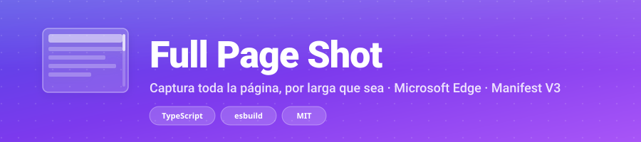

Last updated: October 2026
Full Page Shot is a browser extension that captures full-page screenshots. This privacy policy explains what data the extension accesses and how it is used.
Full Page Shot does not collect, store, transmit, or share any personal data. All capture, processing and saving happen locally in your browser. No information is sent to any external server.
Page.captureScreenshot with captureBeyondViewport). Used solely to take the screenshot.storage.sync.
The extension does not request host_permissions. The URL and
title are read through the DevTools Protocol, not by injecting code into pages.
Your preferences are stored in chrome.storage.sync (synced across your
signed-in browsers by Chrome/Edge). Recent captures (file name, dimensions, timestamp)
are stored in chrome.storage.local and never leave your device.
Full Page Shot does not integrate with any third-party analytics, advertising, or tracking service. It does not use cookies. The only network requests are those made by the web pages you capture (which are independent of this extension).
Full Page Shot is open source under the MIT License. You can audit the code at github.com/AlbertoVasquezR/full-page-shot.
Questions or concerns? Open an issue on GitHub or report a vulnerability via the Security tab.